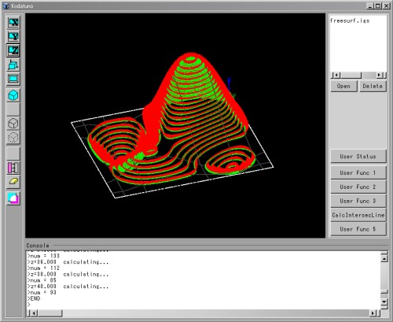
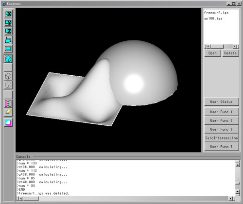
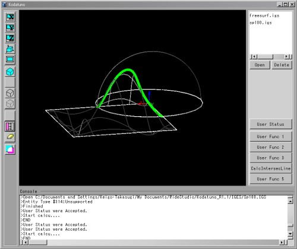

|
|
|
Prev
Index
Next |
サンプルアプリケーションの実行
Kodatunoには2つのサンプルアプリケーションが用意されています。
Ex.1) 等高線算出プログラム
1つのBody(NURBS曲面)と、x-y平面に平行な平面の交線(交点群)を、z方向に少しずつシフトしながら求めてく、等高線算出プログラムです。プロパティ値を色々変更して、結果がどのように変わるか試してみてください。
- まず、2.2 Kodatunoを動かしてみようで示したように、Kodatunoアプリケーションを起動します。
- 次に等高線算出の対象となるBodyを読み込みます。"Open"ボタンを押し、"Kodatuno_R***"フォルダ内にある、 "IGES"フォルダを開くと、"FreeSurf.IGS"という名前のIGESファイルがありますので、それを選択し、"OK"。グラフィック領域に 自由曲面が表示されたことを確認します。
- 次に、ユーザー用ボタンの中から、"User Status"をクリック、User Statusダイアログを表示します。"Mode1"を選択し、プロパティ値 として、
をそれぞれ入力し、"OK"。
- prop1： 40
交線算出用の平面のz方向シフトのz軸の最大値
- prop2： -20
交線算出用の平面のz方向シフトのz軸の最小値
- prop3： 2
交線算出用の平面のz方向シフト1回でのシフト量
- prop4： 0.5
交点群各点間の距離。実寸法の値です。値が大きいほど演算回数は減りますが、対象となる曲率が大きい場合は、入力値をあまり大きくとると、 交点群算出に失敗する場合があります。
- グラフィック領域に表示されているBody上で左クリックし、Bodyをハイライト表示にします。
- ユーザー用ボタンの下から2つ目の"CalcIntersecLine"というラベル名のボタンをクリックします。 これによって、等高線算出計算がスタートします。
- Consoleに計算経過が表示され、計算が終了すると、計算結果がグラフィック領域に描画されます。
緑の点は、等高線上の点群であり、赤の線はその点における法線ベクトルを表しています。 
Ex.2) NURBS曲面同士の交線算出プログラム
2つのBodyを読み込み、両者の交差する交線を算出するプログラムです。
- Ex.1から継続して行う場合は、グラフィック操作アイコンの下から2つ目(消しゴムのマーク)をクリックし、Ex.1の演算結果を消去 します。
- 交線算出用に2つのBodyをそれぞれ読み込みます。"Open"より、デフォルトで表示されるディレクトリから1つ戻り、 "IGES"ディレクトリを開き、"FreeSurf.IGS"及び"Sp100.IGS"を順番に読み込みます。Ex.1から継続している場合は、"Sp100.IGS"のみ 読み込みます。
 - 2つのBodyを選択状態にします。
- ユーザー用ボタンの中から、"User Status"をクリックし、User Statusダイアログを表示します。"Mode2"を選択し、プロパティ値 として、
を入力し、"OK"。
- prop1： 10
交線を算出する際に初期点を幾つか求めなければなりません。その初期点サーチにおける曲面分割数を指定しています。 分割数が少ないと交線の初期点の獲得に失敗し、交線を算出できない場合があります。
- prop2： 0.5
交点群各点間の距離。
- ユーザー用ボタンの下から2つ目の"CalcIntersecLine"ボタンをクリックし、交線算出計算をスタートさせます。
- 計算が終了すると、下図に示すように、2つのNURBS曲面が交差する交点群が表示されます。

| Copyright(C) Kodatuno Development Team, 2011 | Last modified: Mar. 3, 2011 |